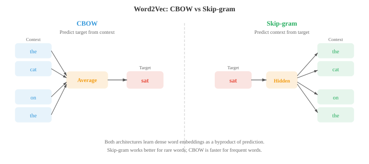

词嵌入与序列模型¶
一句话总结：词嵌入把稀疏离散的文本压进稠密向量空间，让"语义相近"变成"几何相邻"；本节串起 Word2Vec、GloVe、FastText、RNN/LSTM/GRU、带注意力的 seq2seq，一路走到上下文表示。
词嵌入把稀疏、符号化的文本压缩到稠密向量空间，让语义相似度变成几何邻近。本文覆盖 Word2Vec (CBOW、Skip-gram)、GloVe、FastText、循环神经网络 (Recurrent Neural Network, RNN)、长短期记忆网络 (Long Short-Term Memory, LSTM)、门控循环单元 (Gated Recurrent Unit, GRU)、带注意力的 seq2seq 以及编码器-解码器范式，完整走一遍从词袋到上下文表示的演进.
-
01 节我们介绍了分布假设：出现在相似上下文中的词，语义也相似。 02 节我们用词频-逆文档频率 (Term Frequency-Inverse Document Frequency, TF-IDF) 这类稀疏、手工设计的特征来表示文本。 这些向量生活在极高维空间里 (词表里每个词占一个维度)，而且几乎全是零。 词嵌入 (word embedding) 把这些信息压进稠密低维向量，捕捉语义关系，而且是直接从数据里学出来的。
-
Word2Vec (Mikolov 等，2013) 通过在一个简单预测任务上训练浅层神经网络来学词嵌入。 它有两种架构。
-
连续词袋 (Continuous Bag of Words, CBOW) 模型从周围上下文词预测中心词。 给一段上下文窗口 (例如 "the cat ___ on the")，模型把它们的嵌入向量取平均，过一个线性层，预测缺失的那个词 ("sat"). 训练目标是最大化:
- Skip-gram 模型反过来：给一个目标词，预测它周围的上下文词。 对目标词 "sat"，模型分别去预测 "the"、"cat"、"on"、"the". 目标是最大化:

-
Skip-gram 对低频词效果更好，因为每个词会产生多个训练样本 (每个上下文位置一个). CBOW 更快，对高频词稍好，因为它对多个上下文信号做了平均。
-
在完整词表上训练很贵，因为 softmax 分母要对全部 \(V\) 个词求和。 负采样 (negative sampling) 用二分类近似这件事：把真实的上下文词 (正样本) 与随机采样出来的噪声词 (负样本) 区分开。 模型不用算完整的 softmax，只更新目标词、真实上下文词和少量负样本的嵌入:
-
这里 \(v_{w_I}\) 是输入词嵌入，\(v_{w_O}\) 是输出 (上下文) 词嵌入，\(P_n\) 是噪声分布，常用一元词频的 3/4 次方 (这会压一压 "the" 这种超高频词).
-
为什么这么简单的目标能产出有意义的嵌入？Levy 和 Goldberg (2014) 证明，带负采样的 skip-gram 隐式地在做一件事：分解一个偏移的逐点互信息 (Pointwise Mutual Information, PMI) 矩阵。 收敛后，两个词向量的点积近似为:
-
其中 \(\text{PMI}(w, c) = \log \frac{P(w, c)}{P(w) P(c)}\) 衡量词 \(w\) 和 \(c\) 共同出现的频率比"独立随机情况下"预期的高多少 (见第 05 章信息论), \(k\) 是负样本数。 共现远高于随机水平的词，PMI 高，点积也高 (嵌入相似). 共现少于预期的词，PMI 为负，嵌入也不相似。 这揭示了一个事实：Word2Vec 干的事其实和经典的分布语义方法 (如对共现矩阵做奇异值分解 (Singular Value Decomposition, SVD) 的潜在语义分析) 是一回事，只不过它的方式更可扩展、更在线。
-
Word2Vec 嵌入最让人意外的性质是通过向量算术捕捉类比 (analogy). 向量 \(v_{\text{king}} - v_{\text{man}} + v_{\text{woman}}\) 离 \(v_{\text{queen}}\) 最近。 之所以行得通，是因为嵌入空间把语义关系编码成了近似线性的方向："皇室"方向大致就是 \(v_{\text{king}} - v_{\text{man}}\)，把它加到 \(v_{\text{woman}}\) 上就落在 \(v_{\text{queen}}\) 附近。 这和第 01 章的线性代数呼应上了：语义关系就是向量的平移。
-
GloVe (Global Vectors for Word Representation, Pennington 等，2014) 走了另一条路。 它不是一次次从局部上下文窗口里学，而是先建一个全局的词共现矩阵 \(X\)，其中 \(X_{ij}\) 统计整个语料里词 \(j\) 出现在词 \(i\) 上下文里的次数。 然后模型学一组嵌入，让它们的点积近似 log 共现值:
- 损失函数对每一对给出一个权重，用一个截顶函数 \(f(X_{ij})\) 防止超高频共现主导训练:
-
GloVe 把全局矩阵分解 (类似潜在语义分析) 的好处和 Word2Vec 的局部上下文学习结合了起来。 实践中，GloVe 和 Word2Vec 产出的嵌入质量差不多。
-
FastText (Bojanowski 等，2017) 在 skip-gram 基础上做了扩展：把每个词表示成字符 n-gram 的袋。 词 "where" 在 \(n = 3\) 时被拆成："
". 这个词的嵌入就是所有 n-gram 嵌入之和。 -
这带来一个关键优势：FastText 能给训练时从未见过的词也产出嵌入。 词 "whereabouts" 和 "where" 共享 n-gram，所以即使训练数据里从没出现过 "whereabouts"，它的嵌入也不会太离谱。 这对形态丰富的语言 (见 01 节) 特别有用，因为这些语言里一个词会有很多屈折形式。
-
嵌入评估一般用两类基准。 类比任务 (analogy task) 测试 \(v_a - v_b + v_c \approx v_d\) (例如 "Paris" \(-\) "France" \(+\) "Italy" \(\approx\) "Rome"). 相似度基准 (similarity benchmark) 把词对的余弦相似度 (见第 01 章) 和人类打分比较。 常见数据集有 WordSim-353、SimLex-999 和 Google 类比测试集。 有个现实的告诫：类比任务上表现好的嵌入，在情感分类这类下游任务上不一定最好。 最好的评估往往就是任务本身。
-
第 06 章我们把 RNN、LSTM、GRU 作为处理序列数据的架构介绍过了。 这里我们专门看它们怎么用在语言任务上。
-
语言模型 RNN 一次读一个 token，每一步预测下一个 token. 隐藏状态 \(h_t\) 把整段历史 \(w_1, \ldots, w_t\) 压进一个固定大小的向量里，再用一个线性层加 softmax 把 \(h_t\) 映射成词表上的分布。 训练时用真实下一个 token 的交叉熵损失，这和最小化困惑度 (见 02 节) 等价。 关键的局限：固定大小的隐藏状态得把整段历史都编进去，早期 token 的信息会被逐渐覆盖。
-
双向 RNN (bidirectional RNN) 从两个方向处理序列：一个 RNN 从左到右读，另一个从右到左读。 在每个位置 \(t\)，前向隐藏状态 \(\overrightarrow{h}_t\) 和后向隐藏状态 \(\overleftarrow{h}_t\) 拼起来，形成上下文感知的表示 \(h_t = [\overrightarrow{h}_t ; \overleftarrow{h}_t]\). 这让模型同时能看到过去和未来的上下文，对词性标注 (Part-of-Speech, POS) 和命名实体识别 (Named Entity Recognition, NER) 这类任务 (见 02 节) 非常有用，因为一个词的标签常同时依赖前后的词。 双向 RNN 不能用来做语言建模，因为你在预测下一个 token 时不能"偷看"未来。

-
深层堆叠 RNN (deep stacked RNN) 把多个 RNN 层叠在一起。 第 \(l\) 层在所有时间步上的隐藏状态构成第 \(l + 1\) 层的输入序列。 堆 2-4 层通常能通过构建层次化表示提升效果，类似深层卷积神经网络 (Convolutional Neural Network, CNN) 构建特征层级 (见第 06 章). 超过 4 层，梯度消失和过拟合就成了问题，除非在层之间加残差连接。
-
序列到序列 (sequence-to-sequence, seq2seq) 架构 (Sutskever 等，2014) 把变长输入序列映射到变长输出序列。 它由一个编码器 (encoder) RNN 读入输入并压成一个上下文向量 (最后一步的隐藏状态)，以及一个解码器 (decoder) RNN 逐 token 生成输出，条件是这个上下文向量。

-
seq2seq 是机器翻译的突破性架构。 编码器读一句法语，解码器产出英文翻译。 解码器从一个特殊的 start-of-sequence token 起步，自回归生成 token，直到产出 end-of-sequence token. 一个实用小技巧：把输入序列翻过来 (喂 "chat le" 而不是 "le chat") 效果反而更好，因为这样第一个输入词和第一个输出词在计算图上离得更近，梯度路径更短。
-
瓶颈问题：整个输入必须被压进一个固定大小的向量。 句子一长，这个向量装不下所有信息，效果就掉下来了。 这催生了注意力机制 (attention mechanism).
-
第 06 章介绍了注意力的现代 Q、K、V 表述。 NLP 里最早的注意力机制是另一种形式，作为编码器和解码器状态之间的对齐模型。
-
Bahdanau 注意力 (加性注意力，Bahdanau 等，2015) 用一个学出来的前馈网络计算解码器隐藏状态 \(s_t\) 和每个编码器隐藏状态 \(h_i\) 之间的对齐分数:
- 分数经过 softmax 归一化成注意力权重，上下文向量就是编码器状态的加权和:
-
解码器再用 \(s_{t-1}\) 和 \(c_t\) 一起产出下一个输出。 关键洞察：不再是整句话共用一个固定的上下文向量，而是每一个解码步都拿到一份不同的编码器状态加权组合，让模型能"回头看"输入里相关的地方。
-
Luong 注意力 (乘性注意力，Luong 等，2015) 把分数计算简化了。 dot 变体用 \(e_{ti} = s_t^T h_i\). general 变体用 \(e_{ti} = s_t^T W h_i\). 这些比 Bahdanau 的加性分数快，因为用的是矩阵乘法而不是前馈网络。 Luong 注意力还从当前解码器状态 \(s_t\) (而非 \(s_{t-1}\)) 计算上下文向量，这让它拿到更多信息，但计算流程稍有不同。

-
注意力权重常被可视化成热力图，展示解码器在生成每个输出 token 时聚焦在哪些输入 token 上。 在翻译任务里，这些热力图大致描出源语言和目标语言之间的词对齐，对角线模式会被语序调整打破 (例如法语和英语的形容词-名词顺序不同).
-
推理时，解码器每一步都得挑一个 token. 贪心解码 (greedy decoding) 每个位置都取概率最高的 token，但这会导致次优的序列：一个局部好的选择可能把模型逼进一个全局差的句子。 束搜索 (beam search) 每一步都保留 top \(k\) (束宽) 个部分序列，每个都尝试所有可能的下一个 token，再整体保留最好的 \(k\) 个。
-
当束宽 \(k = 1\) 时，束搜索退化为贪心解码。 典型值是 \(k = 4\) 到 \(k = 10\). 束越大，找到的序列越好，但速度成比例变慢。 束搜索还需要长度归一化 (length normalisation)，否则模型会偏爱短序列，因为短序列自然乘的项少、总概率高。 归一化分数是:
-
其中 \(|y|\) 是序列长度，\(\alpha\) (常取 0.6-0.7) 控制长度惩罚的强度。 \(\alpha = 0\) 时没有长度归一化。 \(\alpha = 1\) 时分数就是每 token 的对数概率 (几何平均). 中间值在"倾向简洁"和"避免过早截断"之间取平衡。
-
RNN 是顺序处理文本的，1D CNN 则通过在 token 序列上滑动滤波器来并行处理。 每个滤波器检测一个局部模式 (一个 n-gram 特征).
-
TextCNN (Kim, 2014) 在输入嵌入矩阵上应用多个宽度不同的一维卷积滤波器 (例如 3、4、5 个 token). 每个滤波器产出一张特征图，max-over-time pooling (时间维最大池化) 从每张特征图里取单一最大值，记录这个模式在文本中的任意位置是否出现过 (与位置无关). 所有滤波器池化后的特征拼起来，送入分类器。

-
TextCNN 又快又意外地好用，在情感分析这类文本分类任务上很能打。 它能捕捉局部 n-gram 模式，但没法建模长程依赖：一个宽度 5 的滤波器只能看到 5 个连续 token. 膨胀因果卷积 (dilated causal convolution) 通过在滤波器元素之间插入空隙 (膨胀) 解决这个问题。 把层叠起来，膨胀率按指数增长 (1、2、4、8……)，感受野也指数增长，参数量却不变，让模型能捕获几百个 token 范围内的依赖。
-
到这里为止说的所有嵌入 (Word2Vec、GloVe、FastText) 都是每个词类型给出一个向量，与上下文无关。 "Bank" 不管指银行还是河岸，拿到的都是同一个嵌入。 这是个根本局限，而上下文嵌入 (contextual embedding) 就是来解决它的。
-
ELMo (Embeddings from Language Models, Peters 等，2018) 在输入文本上跑一个深度双向 LSTM 语言模型，产出上下文相关的词表示。 前向 LSTM 每个位置预测下一个词；一个独立的后向 LSTM 每个位置预测上一个词。 两个都在大语料上作为语言模型训练。
-
在每个位置 \(k\), ELMo 用任务相关的可学权重把所有 \(L\) 层的隐藏状态组合起来:
-
这里 \(h_{k,j}\) 是位置 \(k\)、第 \(j\) 层的隐藏状态 (第 0 层是原始 token 嵌入), \(s_j\) 是经过 softmax 归一化的标量权重，\(\gamma\) 是任务相关的缩放因子。 不同层捕捉不同信息：底层捕捉句法 (POS 标签、词形态)，高层捕捉语义 (词义、语义角色). 把所有层用可学权重混起来，ELMo 嵌入就能适应各种下游任务。
-
ELMo 标志着预训练-微调 (pre-train then fine-tune) 范式的开端：先在海量无标注文本上训一个大语言模型，再把它的表示用于下游任务。 ELMo 具体做法是把预训练表示作为固定或轻微调整的特征，拼在任务相关的输入上。 BERT 和 GPT (见 04 节) 把这条路走得更远——端到端微调整个模型，效果好得多。
-
从 Word2Vec 到 ELMo 的演进展示了 NLP 里一个反复出现的主题：从静态到动态表示，从局部到全局上下文，从浅层到深层模型。 每一步都在计算成本和更丰富的表示之间做权衡。 Transformer (见 04 节) 完成了这段演进：用注意力彻底取代循环，既能做深度上下文化，又能并行计算。
编程任务 (用 Colab 或 notebook)¶
-
从零实现带负采样的 Word2Vec skip-gram. 在一个小语料上训练，用主成分分析 (Principal Component Analysis, PCA) 可视化学到的嵌入。
import jax import jax.numpy as jnp import matplotlib.pyplot as plt # 小语料 corpus = """the king ruled the kingdom . the queen ruled the kingdom . the prince is the son of the king . the princess is the daughter of the queen . a man worked in the castle . a woman worked in the castle . the king and queen lived in the castle . the prince and princess played outside .""".lower().split() vocab = sorted(set(corpus)) word2idx = {w: i for i, w in enumerate(vocab)} idx2word = {i: w for w, i in word2idx.items()} V = len(vocab) # 用窗口大小 2 生成 skip-gram 对 window = 2 pairs = [] for i, word in enumerate(corpus): for j in range(max(0, i - window), min(len(corpus), i + window + 1)): if i != j: pairs.append((word2idx[word], word2idx[corpus[j]])) pairs = jnp.array(pairs) print(f"Vocabulary: {V} words, Training pairs: {len(pairs)}") # 模型参数 embed_dim = 16 key = jax.random.PRNGKey(42) k1, k2 = jax.random.split(key) W_in = jax.random.normal(k1, (V, embed_dim)) * 0.1 # 输入嵌入 W_out = jax.random.normal(k2, (V, embed_dim)) * 0.1 # 输出嵌入 # 单对样本的负采样损失 def neg_sampling_loss(W_in, W_out, target, context, neg_ids): v_in = W_in[target] # (embed_dim,) v_out = W_out[context] # (embed_dim,) v_neg = W_out[neg_ids] # (k, embed_dim) pos_loss = -jax.nn.log_sigmoid(jnp.dot(v_in, v_out)) neg_loss = -jnp.sum(jax.nn.log_sigmoid(-v_neg @ v_in)) return pos_loss + neg_loss # 训练循环 num_neg = 5 lr = 0.05 @jax.jit def train_step(W_in, W_out, target, context, neg_ids): loss, (g_in, g_out) = jax.value_and_grad(neg_sampling_loss, argnums=(0, 1))( W_in, W_out, target, context, neg_ids) return loss, W_in - lr * g_in, W_out - lr * g_out key = jax.random.PRNGKey(0) for epoch in range(50): total_loss = 0.0 for i in range(len(pairs)): key, subkey = jax.random.split(key) neg_ids = jax.random.randint(subkey, (num_neg,), 0, V) loss, W_in, W_out = train_step(W_in, W_out, pairs[i, 0], pairs[i, 1], neg_ids) total_loss += loss if (epoch + 1) % 10 == 0: print(f"Epoch {epoch+1}: avg loss = {total_loss / len(pairs):.4f}") # 用 PCA 可视化 (见第 01 章) embeddings = W_in mean = embeddings.mean(axis=0) centered = embeddings - mean U, S, Vt = jnp.linalg.svd(centered, full_matrices=False) coords = centered @ Vt[:2].T # 投影到前 2 个主成分 plt.figure(figsize=(10, 8)) for i, word in idx2word.items(): plt.scatter(coords[i, 0], coords[i, 1], c='#3498db', s=40) plt.annotate(word, (coords[i, 0] + 0.02, coords[i, 1] + 0.02), fontsize=9) plt.title("Word2Vec Skip-gram Embeddings (PCA projection)") plt.grid(alpha=0.3); plt.show() -
搭一个字符级 RNN 语言模型，让它学会从一小段训练字符串里生成文本。
import jax import jax.numpy as jnp # 极小训练文本 text = "to be or not to be that is the question " chars = sorted(set(text)) char2idx = {c: i for i, c in enumerate(chars)} idx2char = {i: c for c, i in char2idx.items()} V = len(chars) data = jnp.array([char2idx[c] for c in text]) # RNN 参数 hidden_dim = 64 key = jax.random.PRNGKey(0) k1, k2, k3, k4, k5 = jax.random.split(key, 5) params = { 'Wx': jax.random.normal(k1, (V, hidden_dim)) * 0.1, 'Wh': jax.random.normal(k2, (hidden_dim, hidden_dim)) * 0.05, 'bh': jnp.zeros(hidden_dim), 'Wy': jax.random.normal(k3, (hidden_dim, V)) * 0.1, 'by': jnp.zeros(V), } def rnn_step(params, h, x_idx): x = jnp.eye(V)[x_idx] # one-hot 编码 h = jnp.tanh(x @ params['Wx'] + h @ params['Wh'] + params['bh']) logits = h @ params['Wy'] + params['by'] return h, logits def loss_fn(params, inputs, targets): h = jnp.zeros(hidden_dim) total_loss = 0.0 for t in range(len(inputs)): h, logits = rnn_step(params, h, inputs[t]) log_probs = jax.nn.log_softmax(logits) total_loss -= log_probs[targets[t]] return total_loss / len(inputs) grad_fn = jax.jit(jax.grad(loss_fn)) # 训练 inputs = data[:-1] targets = data[1:] lr = 0.01 for step in range(500): grads = grad_fn(params, inputs, targets) params = {k: params[k] - lr * grads[k] for k in params} if (step + 1) % 100 == 0: l = loss_fn(params, inputs, targets) print(f"Step {step+1}: loss = {l:.4f}") # 生成文本 def generate(params, seed_char, length=60): h = jnp.zeros(hidden_dim) idx = char2idx[seed_char] result = [seed_char] key = jax.random.PRNGKey(42) for _ in range(length): h, logits = rnn_step(params, h, idx) key, subkey = jax.random.split(key) idx = jax.random.categorical(subkey, logits) result.append(idx2char[int(idx)]) return ''.join(result) print(f"\nGenerated: {generate(params, 't')}") -
实现一个带 Bahdanau 注意力的玩具 seq2seq 模型，做序列反转。 可视化注意力对齐矩阵。
import jax import jax.numpy as jnp import matplotlib.pyplot as plt # 任务: 反转一串数字 (例如 [3, 1, 4] -> [4, 1, 3]) vocab_size = 10 # 数字 0-9 SOS, EOS = 10, 11 # 特殊 token total_vocab = 12 embed_dim, hidden_dim = 16, 32 max_len = 5 key = jax.random.PRNGKey(42) keys = jax.random.split(key, 8) params = { 'embed': jax.random.normal(keys[0], (total_vocab, embed_dim)) * 0.1, 'enc_Wx': jax.random.normal(keys[1], (embed_dim, hidden_dim)) * 0.1, 'enc_Wh': jax.random.normal(keys[2], (hidden_dim, hidden_dim)) * 0.05, 'dec_Wx': jax.random.normal(keys[3], (embed_dim, hidden_dim)) * 0.1, 'dec_Wh': jax.random.normal(keys[4], (hidden_dim, hidden_dim)) * 0.05, # Bahdanau 注意力 'Ws': jax.random.normal(keys[5], (hidden_dim, hidden_dim)) * 0.1, 'Wh_att': jax.random.normal(keys[6], (hidden_dim, hidden_dim)) * 0.1, 'v_att': jax.random.normal(keys[7], (hidden_dim,)) * 0.1, # 输出映射 (从隐藏 + 上下文到词表) 'Wo': jax.random.normal(keys[0], (hidden_dim * 2, total_vocab)) * 0.1, } def encode(params, seq): """编码输入序列, 返回所有隐藏状态.""" h = jnp.zeros(hidden_dim) states = [] for t in range(len(seq)): x = params['embed'][seq[t]] h = jnp.tanh(x @ params['enc_Wx'] + h @ params['enc_Wh']) states.append(h) return jnp.stack(states), h def bahdanau_attention(params, dec_state, enc_states): """计算 Bahdanau 注意力权重和上下文向量.""" scores = jnp.tanh(enc_states @ params['Wh_att'] + dec_state @ params['Ws']) e = scores @ params['v_att'] # (src_len,) alpha = jax.nn.softmax(e) context = alpha @ enc_states return context, alpha def decode_step(params, dec_h, prev_token, enc_states): x = params['embed'][prev_token] dec_h = jnp.tanh(x @ params['dec_Wx'] + dec_h @ params['dec_Wh']) context, alpha = bahdanau_attention(params, dec_h, enc_states) combined = jnp.concatenate([dec_h, context]) logits = combined @ params['Wo'] return dec_h, logits, alpha def seq2seq_loss(params, src, tgt): enc_states, enc_final = encode(params, src) dec_h = enc_final loss = 0.0 prev_token = SOS for t in range(len(tgt)): dec_h, logits, _ = decode_step(params, dec_h, prev_token, enc_states) log_probs = jax.nn.log_softmax(logits) loss -= log_probs[tgt[t]] prev_token = tgt[t] return loss / len(tgt) # 生成训练数据: 反转序列 key = jax.random.PRNGKey(0) train_srcs, train_tgts = [], [] for _ in range(200): key, subkey = jax.random.split(key) length = jax.random.randint(subkey, (), 3, max_len + 1) key, subkey = jax.random.split(key) seq = jax.random.randint(subkey, (int(length),), 0, vocab_size) train_srcs.append(seq) train_tgts.append(seq[::-1]) # 反转 # 训练 grad_fn = jax.grad(seq2seq_loss) lr = 0.01 for epoch in range(100): total_loss = 0.0 for src, tgt in zip(train_srcs, train_tgts): grads = grad_fn(params, src, tgt) params = {k: params[k] - lr * grads[k] for k in params} total_loss += seq2seq_loss(params, src, tgt) if (epoch + 1) % 20 == 0: print(f"Epoch {epoch+1}: avg loss = {total_loss / len(train_srcs):.4f}") # 可视化某个例子的注意力 test_src = jnp.array([3, 1, 4, 1, 5]) test_tgt = test_src[::-1] enc_states, enc_final = encode(params, test_src) dec_h = enc_final attentions = [] prev_token = SOS for t in range(len(test_tgt)): dec_h, logits, alpha = decode_step(params, dec_h, prev_token, enc_states) attentions.append(alpha) prev_token = test_tgt[t] att_matrix = jnp.stack(attentions) fig, ax = plt.subplots(figsize=(6, 5)) im = ax.imshow(att_matrix, cmap='Blues') ax.set_xlabel("Source position"); ax.set_ylabel("Target position") src_labels = [str(int(x)) for x in test_src] tgt_labels = [str(int(x)) for x in test_tgt] ax.set_xticks(range(len(src_labels))); ax.set_xticklabels(src_labels) ax.set_yticks(range(len(tgt_labels))); ax.set_yticklabels(tgt_labels) for i in range(len(tgt_labels)): for j in range(len(src_labels)): ax.text(j, i, f"{att_matrix[i,j]:.2f}", ha='center', va='center', fontsize=9) ax.set_title("Bahdanau Attention Alignment (sequence reversal)") plt.colorbar(im); plt.tight_layout(); plt.show()
📌 本节要点¶
- 词嵌入：把稀疏离散词表压进稠密低维向量，让语义相似度变成几何邻近，直接从数据里学出来。
- Word2Vec 两种架构: CBOW 用上下文预测中心词 (对高频词更好); Skip-gram 用中心词预测上下文 (对低频词更好).
- 负采样：用二分类近似完整 softmax，隐式分解偏移 PMI 矩阵，让训练大幅提速。
- 类比线性性：嵌入空间把语义关系编码成近似线性方向，于是 \(v_{\text{king}} - v_{\text{man}} + v_{\text{woman}} \approx v_{\text{queen}}\).
- GloVe 与 FastText: GloVe 用全局共现矩阵 + 加权最小二乘；FastText 用字符 n-gram，能处理训练时未见过的词。
- RNN 语言模型局限：固定大小隐藏状态难以保留长历史，早期 token 信息会被覆盖。
- 双向 RNN 与堆叠 RNN：前者拿到过去+未来上下文 (适合 POS/NER，不能用于语言建模)，后者构建层次表示。
- seq2seq 与注意力：编码器压成上下文向量成为瓶颈；Bahdanau (加性) 与 Luong (乘性) 注意力让解码每一步都能"回头看"输入。
- 解码策略：贪心易陷局部最优；束搜索保留 top \(k\) 候选，需要长度归一化避免偏爱短句。
- 上下文嵌入: ELMo 用深度双向 LSTM 产生随上下文变化的表示，开启预训练-微调范式，为 BERT/GPT 铺路。